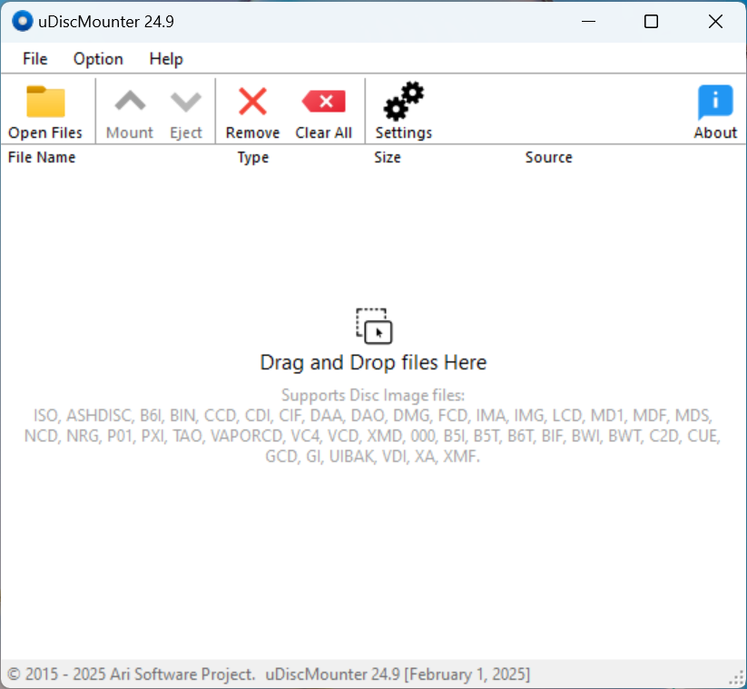
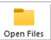
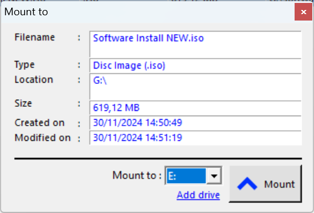

Support
uDiscMounter is a tool designed to manage virtual drives and mount disk image files with very wide format support on Windows operating systems. It supports almost all known CD/DVD image file formats, such as .ISO, .BIN, .IMG, .CIF, .NRG, .MDS, .CCD, .BWI, .ISZ, .DMG, .DAA, .UIF, .HFS, and more. With uDiscMounter, users can easily mount and manage various types of disk image files without the need for physical hardware, enabling faster and more efficient access to the content within those image files.
| List of Content | ||||||||
| 1.0 | Main Dialog | |||||||
| 2.0 | File Operation | |||||||
|
||||||||
| 3.0 | Mount and Eject | |||||||
| 4.0 | Virtual Drive | |||||||
|
||||||||
| 5.0 | Purchase uDiscMounter | |||||||
1.0.Main Dialog
The main window displays a list of disk image files. The list includes File Name, type, file size, file source information. You can sort the list by any column by clicking the column header.

The control buttons (Open Files, Mount, Eject, Remove, Clear All, Settings, About) are located above the list. These buttons can be on or off depending on what actions can be performed for the current disk image file.
2.0 File Operation
There are several ways to open files into uDiscMounter, the most common being directly using the Open Files control button, which is above the disk image file list.

Drag and drop: Select the file to open in file explorer and drag it into uDiscMounter and drop it.
Associated files: This is the fastest way to open a disk image file into uDiscMounter, you just double-click on the disk image file you want to open.
How to associate a disk image file with uDiscMounter:
- Open uDiscMounter with administrative mode
- Open the Settings menu
- Then the Settings menu dialog will appear, then highlight to Associate with CD/DVD image files.
- Click Enable button to enable the association file. and to disable the association file Click Disable button.
3.0 Mount and Eject
Mounting a disk image file with uDiscMounter is easy, you just need to open the disk image file as described in File Operation. If the disk image file is already open, please click the disk image file to be mounted and click the Mount button then an information dialog will appear as shown below, which shows the disk image file information and the target of mounting the disk image to the virtual drive.

To unmount the disk image file, you can go through Windows Explorer and right-click on the virtual drive where you have mounted and select Eject. Or through the uDiscMounter program you can just click the Eject button and then select the virtual drive where the mounted was previously located.
4.0 Virtual Drive
Adding the number of virtual drives: Enter the Settings menu, then highlight the Number of Virtual drives section, then specify the desired number and click the Set button to apply it, and remember to restart your computer to apply the changes.
Remove Virtual Drives: to remove a virtual drive you just open the Settings menu then select the Remove Driver.
Reinstalling Virtual Drive: In the Settings menu click Install Driver.